A desktop workspace for corn, soybean and wheat markets: prices, trader positioning, crop health, drought, weather, news and the report calendar, side by side and stored locally. Below is the real interface, one feature at a time, with how each one works.
demo/). The data is fictional: prices are a seeded random walk, headlines and plugins are invented, nothing is a market quote. The drivers on the move explainer come from a simplified stand-in for the Rust analytics, not the real attribution.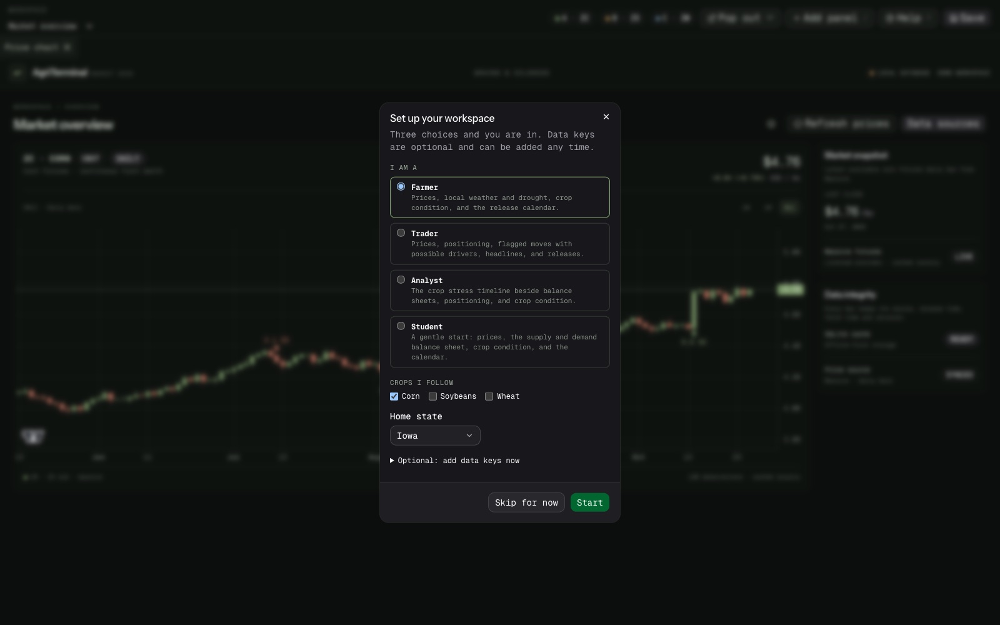
On first launch AgriTerminal asks three things: your role (Farmer, Trader, Analyst, Student), which crops you follow, and your home state. Data keys are optional. It then builds a starting layout for that role, so nobody begins with a blank screen. It can be skipped, and re-run from Settings.
The answers are stored as a profile setting through set_setting. Each role is a template in config/workspace-templates.json: a list of panels, each placed relative to an earlier one (ref + direction).
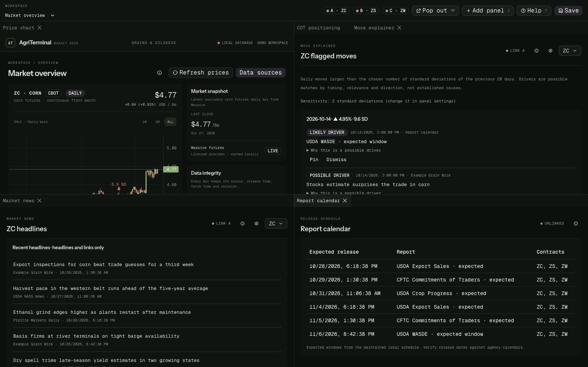
This is the Trader template: price chart, COT positioning, move explainer, headlines and report calendar, all tiled. Panels can be dragged, tabbed, resized and closed. Everything on screen is real UI rendered from fixture data; the prices are a fictional random walk, not quotes.
Layout is handled by dockview. serializeWorkspace() turns the dock into JSON, and an autosave 700 ms after the last change writes it to SQLite with the save_workspace command.
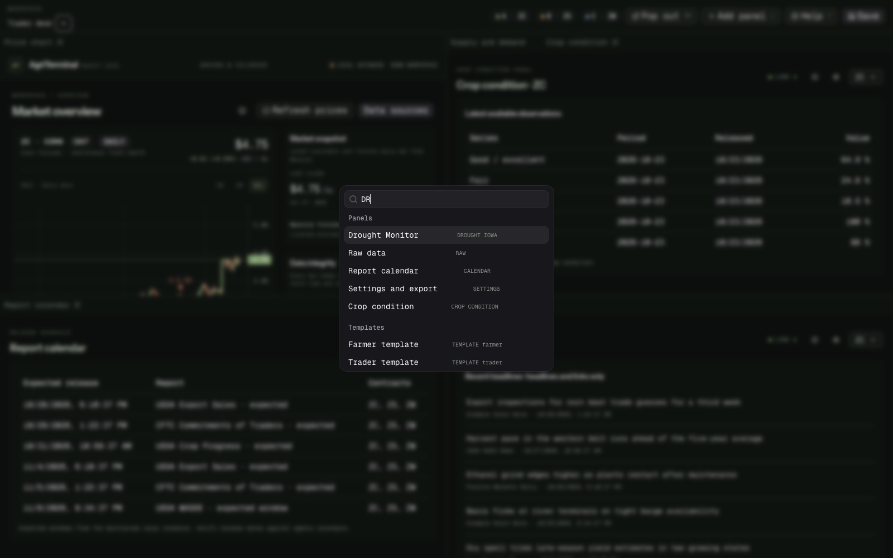
Press / and type what you want: ZC for the corn chart, ZS COT, DROUGHT IOWA, STRESS, TEMPLATE trader, WS Name to switch workspace. If a panel of that kind is already open, it is brought forward instead of duplicated.
grammar.ts parses the text into a command, and commands.ts turns it into a plan (open a panel, retarget a link group, load a template, switch workspace). The shell then acts on the plan. No IPC call is involved until a panel needs data.
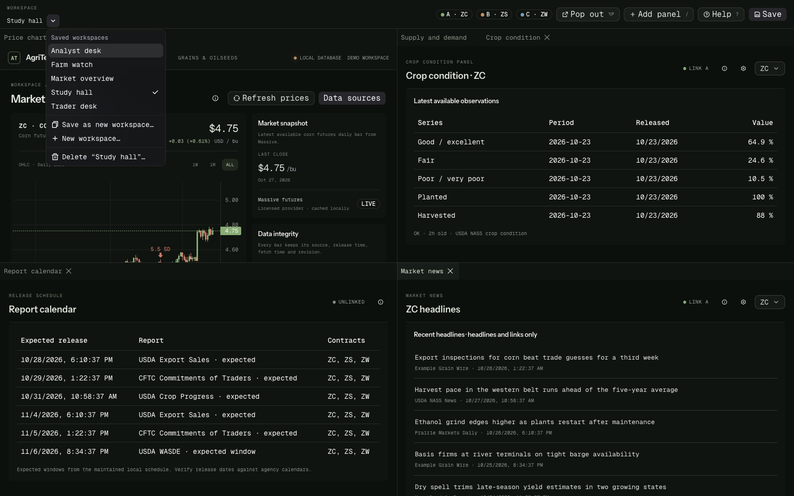
The menu beside the workspace name switches between saved layouts, saves the current one under a new name, creates an empty one, or deletes one. Here are five: one per role template plus a plain overview.
list_workspaces, save_workspace and delete_workspace read and write a (id, name, json) row. A copy also goes to localStorage, which is all the browser preview has.
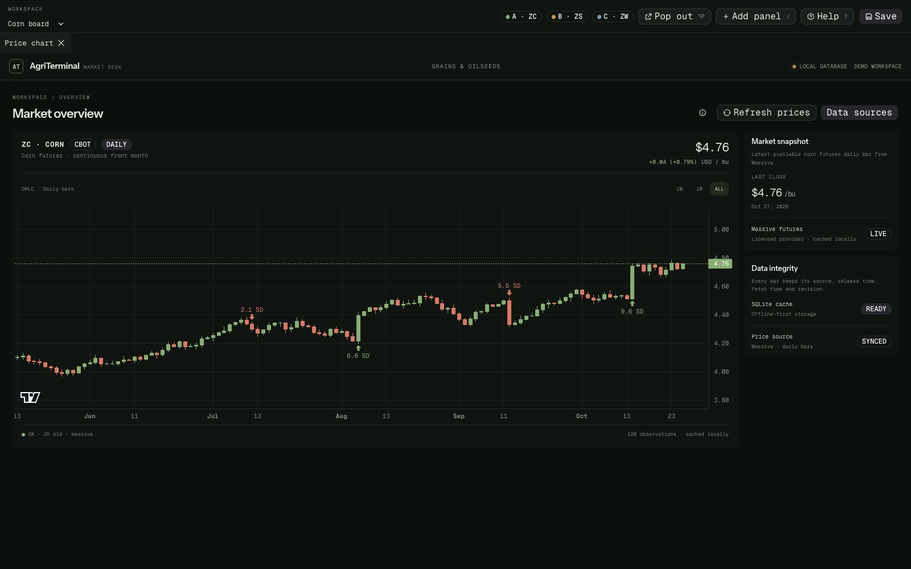
Daily candlesticks for corn, soybeans or wheat. The arrows mark days that moved far more than usual, labelled with how many standard deviations. The last bar updates as new data arrives, with no refresh.
get_series("price.ZC.close") returns bars with source, release time, fetch time and revision. The chart is Lightweight Charts. The backend emits a data-updated event, and the frontend invalidates that series' query so the panel refetches.
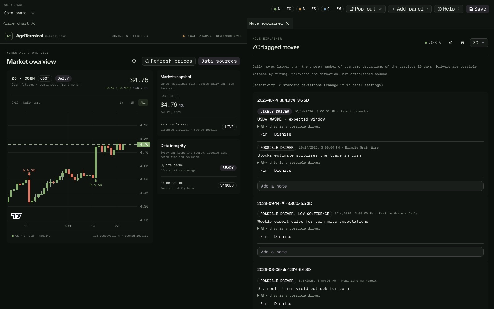
Each flagged move is listed with possible drivers: a scheduled report on the same day, or a headline published around then. Drivers carry a confidence label (Likely, Possible, or Possible with low confidence), never a claim of cause.
explain_moves(commodity, thresholdSd) computes each day's move against the previous 20 days and matches it to calendar events and news in Rust (analytics/attribution.rs). In this demo the matching is a stand-in in demo/mock.ts.
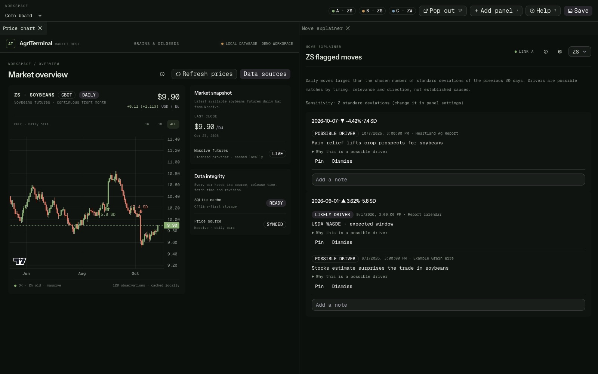
Panels with the same coloured link letter follow one crop. Typing ZS switches every panel in group A from corn to soybeans at once: the chart, the snapshot and the move explainer.
Link groups are a small zustand store (link-groups.ts). Group commodities are saved under the link-groups setting and restored at launch.
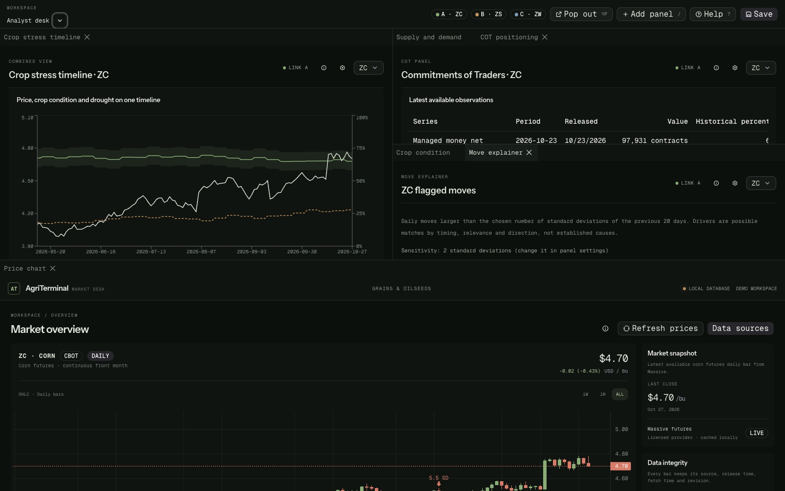
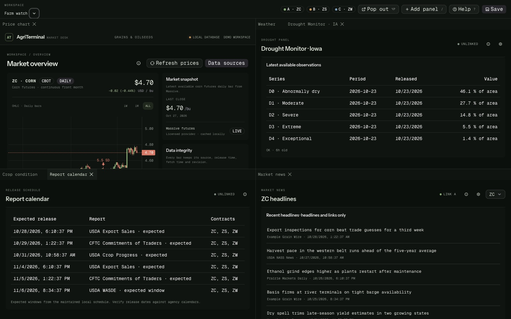
The Analyst layout (left) puts the crop stress timeline first: price, crop condition with a seasonal band, and drought on one chart. The Farmer layout (right) leads with drought and weather for the home state.
crop_stress_timeline(commodity) returns one combined series: price, condition with its seasonal range, and drought. Drought comes from a bundled TOML plugin manifest.
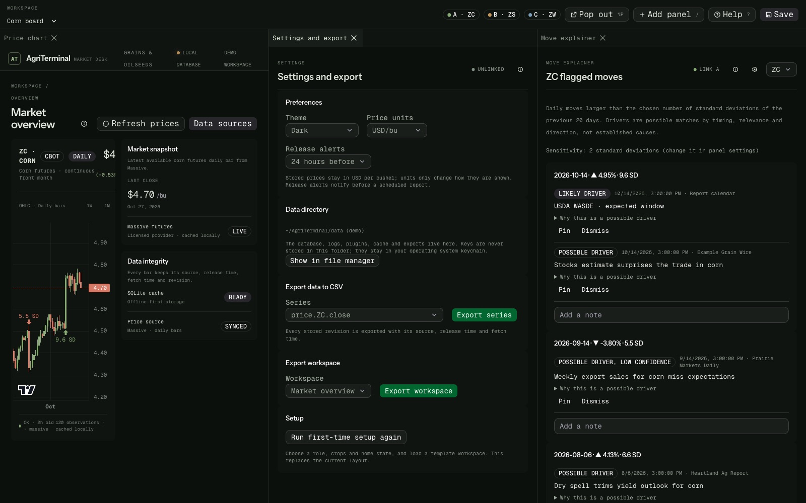
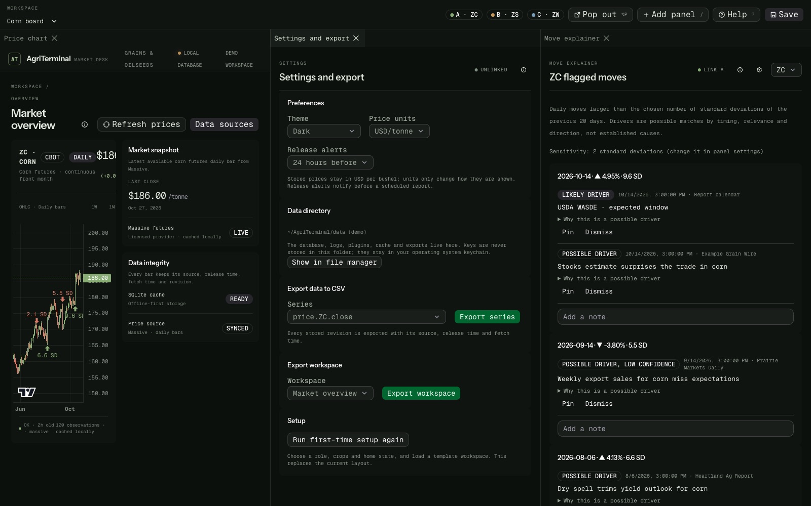
Switching price units from USD/bu to USD/tonne rewrites every price on screen, in the chart, snapshot and alerts, without reloading. Stored prices stay in USD per bushel; only the display changes.
units.ts applies a per-commodity bushels-per-tonne factor at render time. The choice is stored with set_setting("units", …) and read through a persisted-query hook.
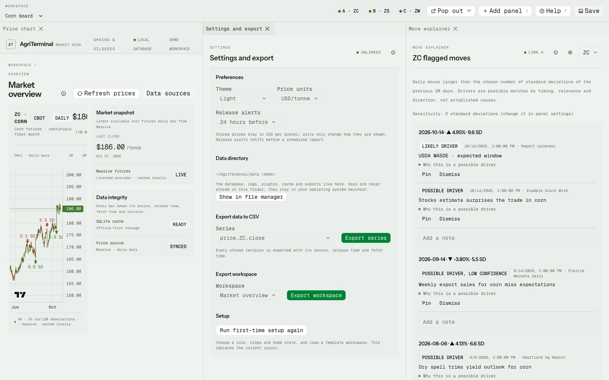
The same workspace in dark and in light. The terminal palette is paired dark and light tokens, and the choice can follow the system.
theme.ts sets the dark class and a data-theme attribute on the root element; theme.css maps both to the same token names. The setting is also in localStorage, so a tiny inline script in index.html avoids a flash on load.
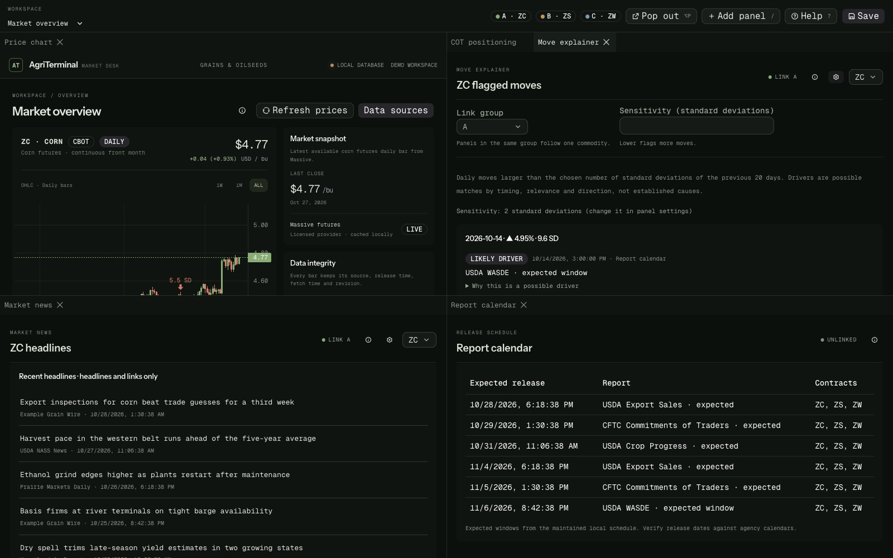
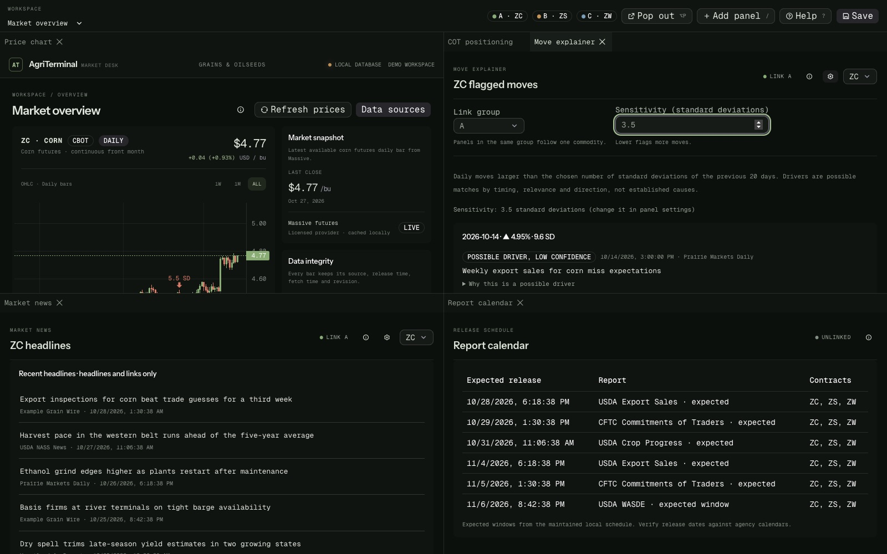
The gear on a panel opens its settings. Changing the move explainer's sensitivity from 2 to 3.5 standard deviations updates the list underneath as you type.
Each panel registers a JSON schema (register.tsx), and schema-form.tsx renders the form from it. The values go into the dock panel's parameters, which are saved with the layout.
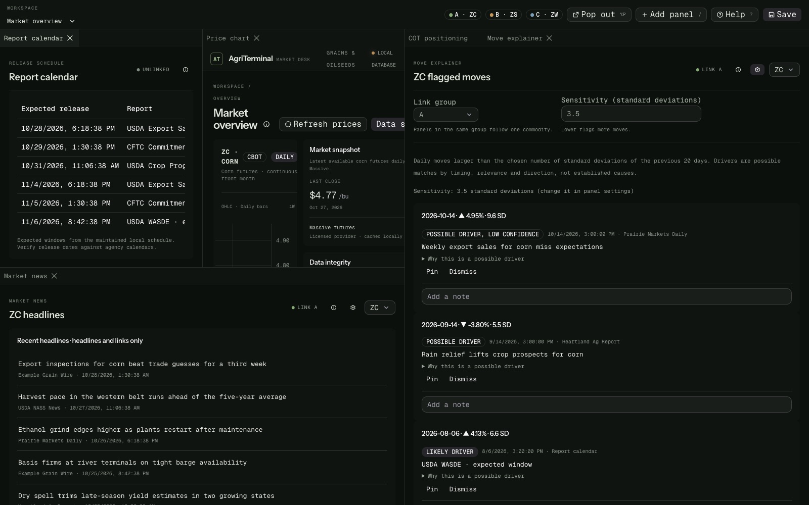
Dragging the Report calendar tab to the left edge of the dock splits a new column for it. The layout autosaves after each change.
A real drag in the real UI: dockview handles the drop zones. onDidLayoutChange triggers the debounced save.
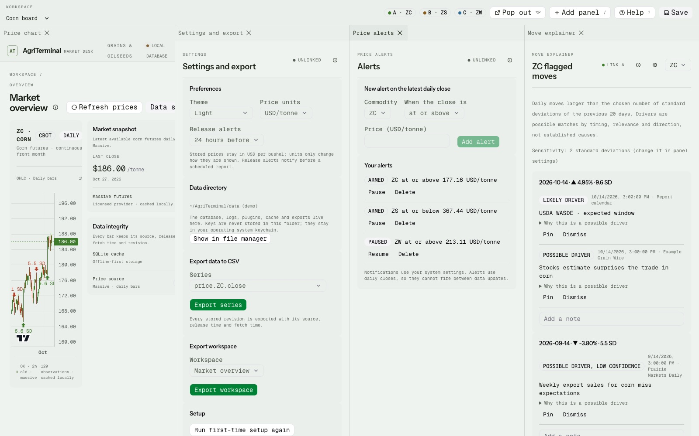
Set a level for a commodity and the alert fires once when a daily close crosses it, then re-arms when the price moves back. Thresholds are shown in your chosen unit.
save_alert, list_alerts and set_alert_enabled store the rules. The backend emits alert-fired, and the frontend shows a system notification through plugin-notification.
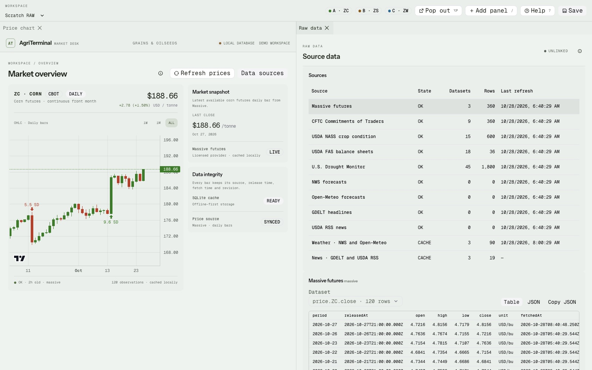
Every stored row from every source, as a table or JSON: prices, positioning, crop condition, balance sheets, drought, and the weather and news caches. A way to check what the app actually holds.
list_stored_series and get_stored_rows(seriesId) read directly from SQLite. Revisions never overwrite an earlier value, so each row keeps its source and release time.
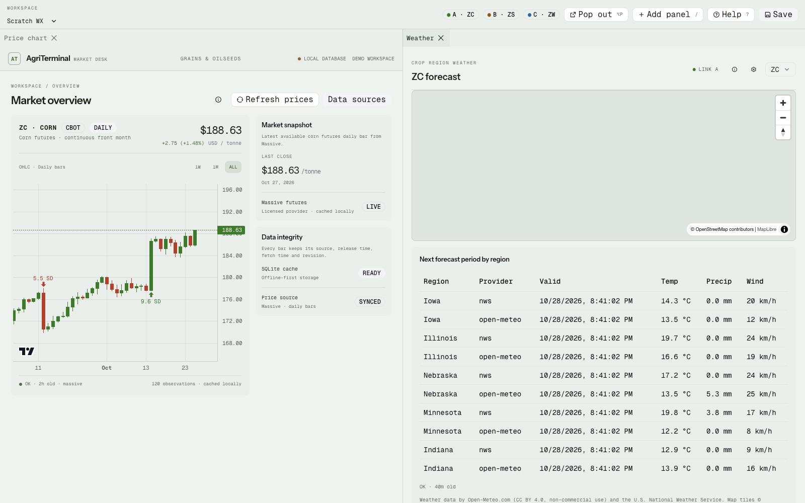
Forecasts for the growing regions of the selected crop, from two providers side by side. The map above the table is blank here. It needs map tiles from the network, and the demo does not provide them. In the real app it plots a marker per region.
get_weather_for_commodity returns cached NWS and Open-Meteo forecasts, refreshed in the background. The map is MapLibre.
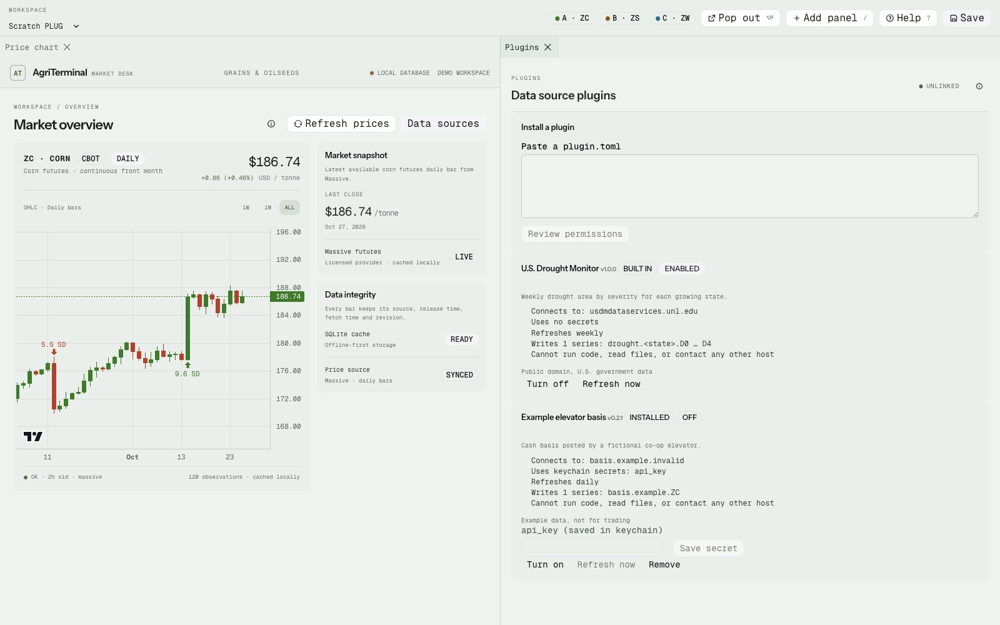
Data sources can be added with a small TOML manifest. Before anything runs, the panel lists which hosts it will contact, which keychain secrets it uses and what it cannot do. The first entry is the built-in Drought Monitor.
preview_plugin validates a manifest and returns its permissions; install_plugin commits it. One permission-enforcing HTTP client runs every manifest, so a plugin cannot run code or read files. Both plugins here are demo data.
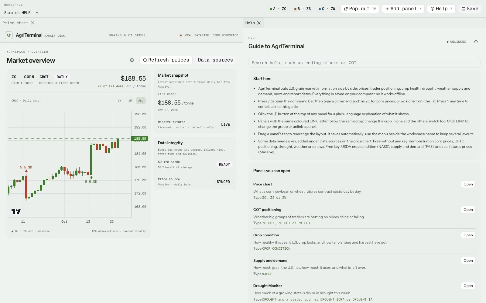
A searchable guide to every command, what each panel shows, how to read the status labels, and a glossary of market terms. The ⓘ button on any panel shows its own part of the guide in place.
Plain text in help-text.ts, so the guide is versioned with the code and works offline.
The frontend never touches the network or the database. It calls typed wrappers in src/lib/ipc.ts; Rust owns the data, fetches it on a schedule, and announces changes with events. That is the seam the demo replaces: demo/mock.ts answers the same 36 commands from fixtures and emits the same events on timers, so the app itself runs unmodified.